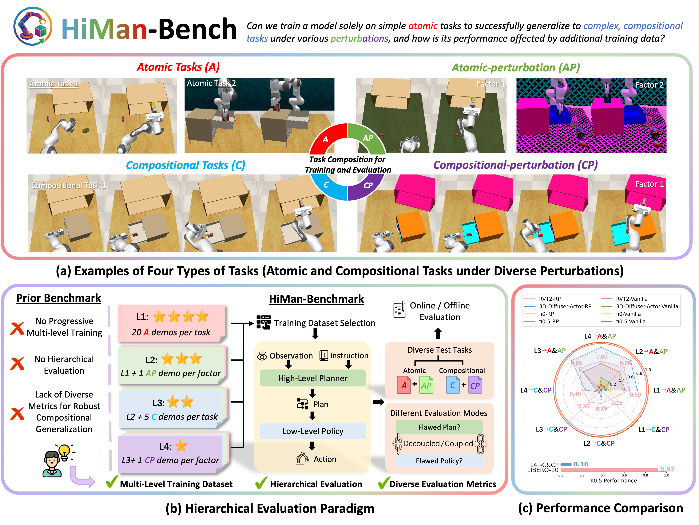
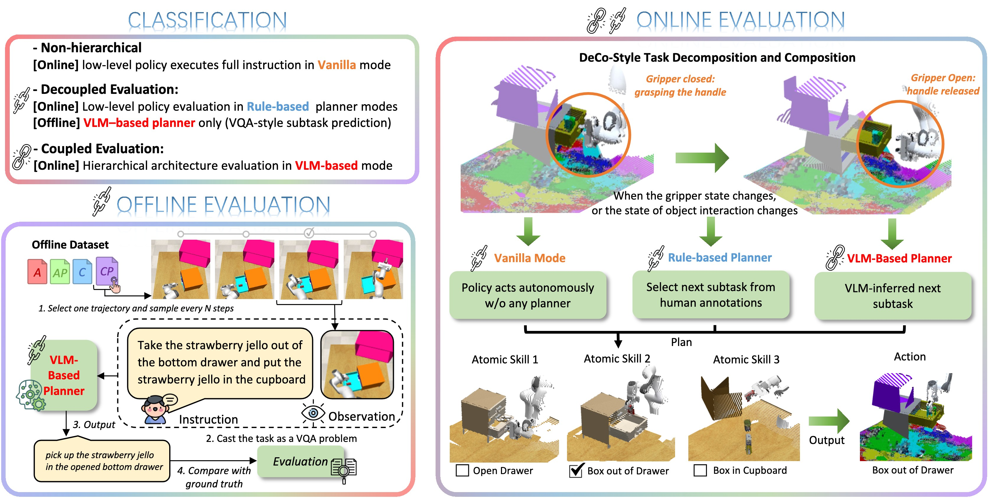
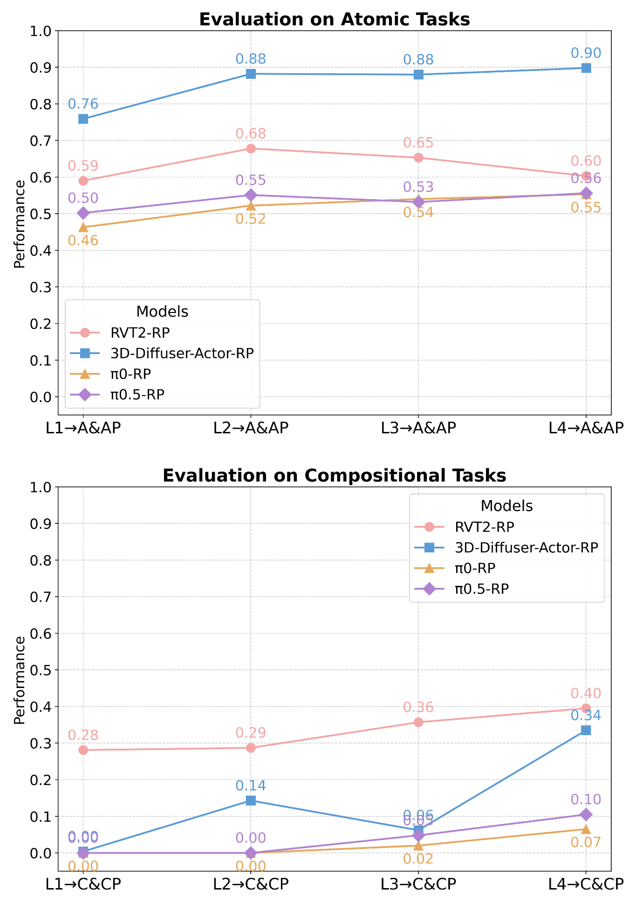
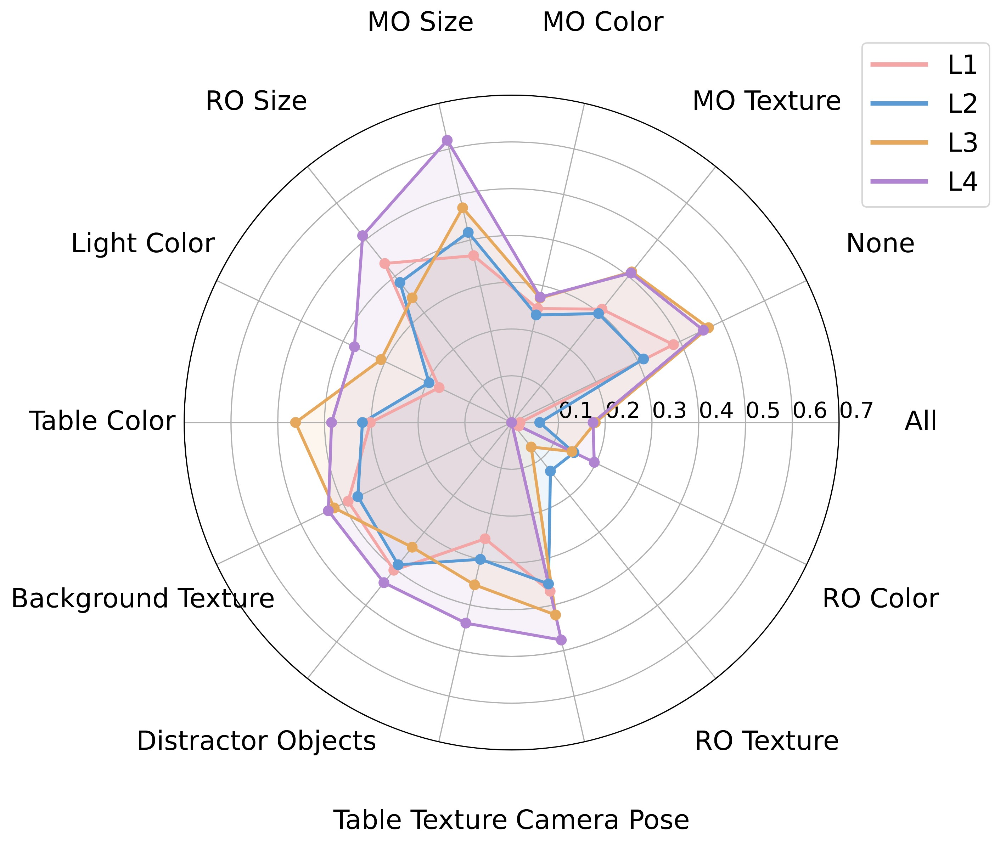
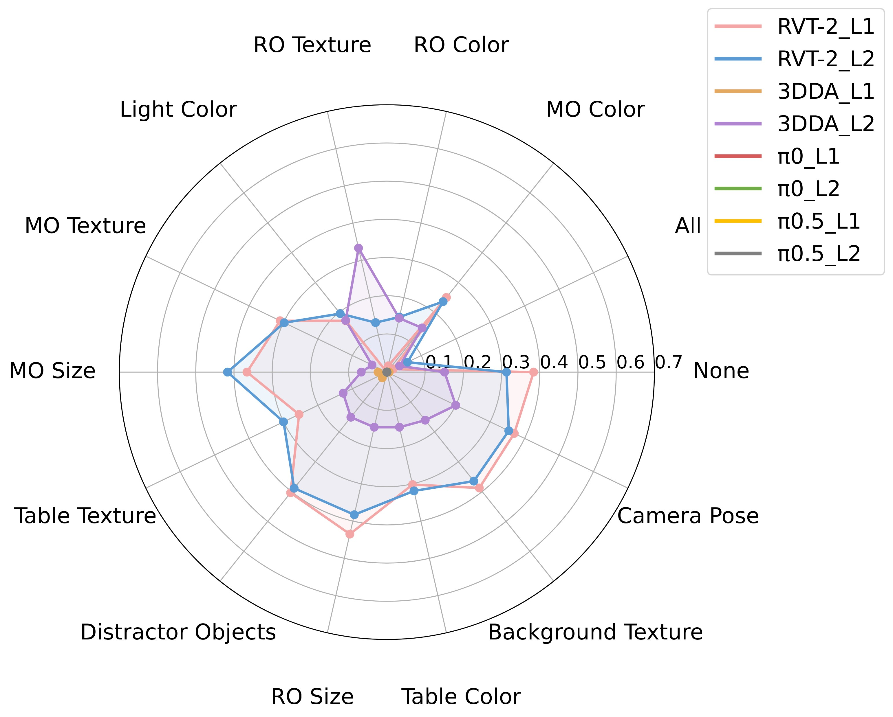
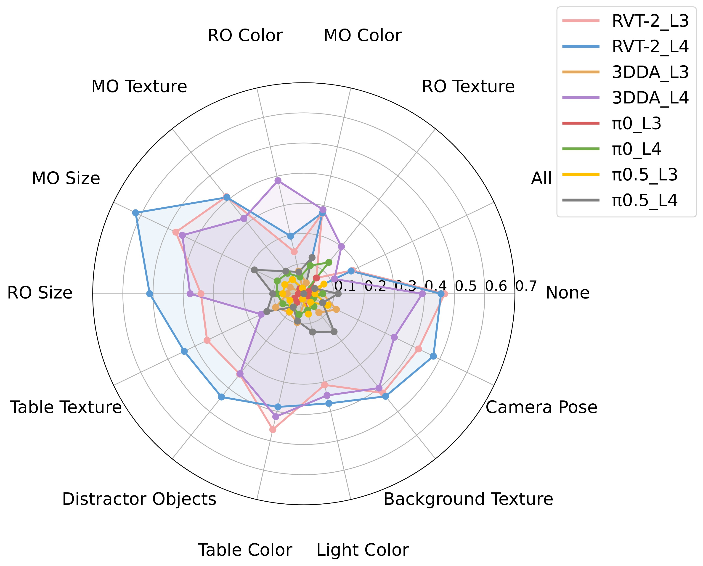
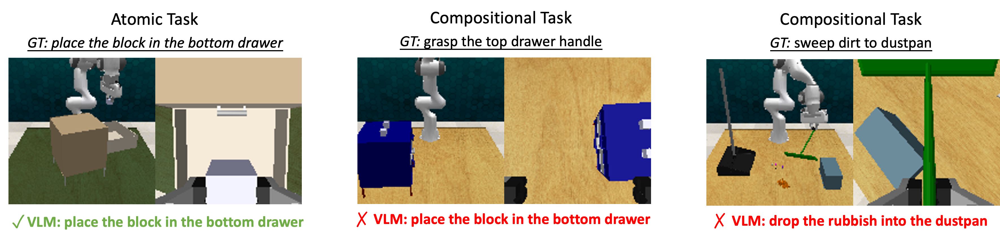

Enabling robots to flexibly schedule and compose learned skills for novel long-horizon manipulation under diverse perturbations remains a core challenge. Early explorations with end-to-end VLA models show limited success, as these models struggle to generalize beyond the training distribution. Hierarchical approaches, where high-level planners generate subgoals for low-level policies, bring certain improvements but still suffer under complex perturbations, revealing limited capability in skill composition. However, existing benchmarks primarily emphasize task completion in long-horizon settings, offering little insight into compositional generalization, robustness, and the interplay between planning and execution. To systematically investigate these gaps, we propose RoboHiMan, a hierarchical evaluation paradigm for compositional generalization in long-horizon manipulation. RoboHiMan introduces HiMan-Bench, a benchmark of atomic and compositional tasks under diverse perturbations, supported by a multi-level training dataset for analyzing progressive data scaling, and proposes three evaluation paradigms (vanilla, decoupled, coupled) that probe the necessity of skill composition and reveal bottlenecks in hierarchical architectures. Experiments highlight clear capability gaps across representative models and architectures, pointing to directions for advancing models better suited to real-world long-horizon manipulation tasks.

RoboHiMan Overview. To evaluate compositional generalization, RoboHiMan introduces: (a) HiMan-Bench with four task types: atomic (A), atomic-perturbation (AP), compositional (C), and compositional-perturbation (CP). (b) A hierarchical evaluation paradigm with diverse metrics and progressive training data (L1-L4), where L1 uses minimal atomic data and L4 provides larger datasets. (c) Extensive experiments that highlight critical performance gaps across training datasets and evaluation modes, often overlooked by prior benchmarks. Here, the notation “X → Y” denotes training on Level X and evaluation on task category Y.

RoboHiMan evaluation paradigm. Three settings are considered: (1) Vanilla - the low-level policy executes tasks directly from instructions without a planner; (2) Decoupled - planner and policy are evaluated separately, using either a rule-based planner (online) or a VLM-based planner (offline); (3) Coupled - a full hierarchical setup where a VLM-based planner generates subgoals online and the low-level policy executes them.
Scaling atomic-skill data improves atomic performance, and since robust atomic execution is a prerequisite, it also benefits compositional tasks.
Increasing both the quantity and diversity of compositional-skill training data further enhances model performance on compositional tasks. However, the overall success rate remains low, even though all compositional tasks can, in principle, be solved by combining the atomic skills the model has learned.

L1
L2
L3
L4
L1
L2
L3
L4
For compositional tasks with various perturbations, including perturbed compositional-skill data in training effectively improves the model's robustness in performing compositional tasks. In comparison, adding perturbed atomic-skill data alone provides only limited gains in robustness.
Both data design and architectural inductive biases (e.g., keyframe selection, 3D information integration) contribute to improved generalization and robustness.



L1
L2
L3
L4
Explicit planning is essential, as it supports robust skill composition and underscores the role of hierarchical reasoning in complex long-horizon tasks.
The bottlenecks of hierarchical architectures stem from three main issues: (i) the high-level planner may generate incorrect plans. (ii) the low-level policy may fail during execution. (iii) if the hierarchical system is not properly designed, failures at the high or low level are not effectively handled, leading to error accumulation and eventual task failure.

Vanilla
Rule-based
VLM-based
@article{anonymous2025robohiman,
title={RoboHiMan: A Hierarchical Evaluation Paradigm for Compositional Generalization in Long-Horizon Manipulation},
author={Anonymous},
journal={Under Review},
year={2025}
}